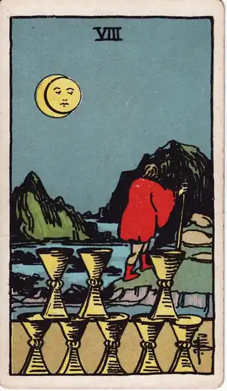
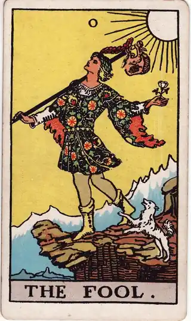

READING
When you're torn over changing jobs in your 30s, the first five questions to sort out
(updated ) · DECIDE. editors

You open a job site, then close it. You registered with an agent, but still haven't replied. It is not that you dislike your current job. But "is this really all right as it is?" crosses your mind several times a month. Being torn over changing jobs in your 30s mostly takes this shape.
Let me say this first: the goal of this page is not to produce the answer "you should change jobs." The goal is to decide in a state where you can say you chose it yourself, whether you stay or move. In decisions in your 30s, a sense of acceptance matters more than momentum.
When you start thinking about changing jobs in your 30s, the way you are torn changes from how it was in your 20s. You have grown used to the work to a degree, the range entrusted to you has widened, and the shape of your life has settled. That is exactly why there is more material to judge by, and what you're torn about runs deeper. In this article, I introduce five questions for putting what you're torn about into words. The cards are used not as a tool for telling the future, but as a trigger for looking at your own thinking from a different angle.
Why being torn runs deeper when changing jobs in your 30s
Being torn in your 30s runs deep not because you lack ability or motivation. Rather, it is because the material for judging has increased.
- You have trust and a track record built up at your current workplace
- You can picture concretely the effects on your life, such as income, family, and where you live
- At the same time, the question "is it all right to work the same way for the next 10 years?" also becomes concrete
In other words, it is a state where what you would let go of and what you want to gain are both clearly in view. Because both are real, you cannot decide easily. There is no need to blame yourself for being torn. You can take it as "proof that you are thinking seriously."
Question 1: What do you want to move away from, and what do you want to move toward?
Motives for changing jobs divide broadly into "wanting to move away" and "wanting to move toward." Do you want to move away from dissatisfaction with relationships or how you are evaluated, or do you want to move toward work or an environment you would like to try? Having both is normal, but being aware of the ratio helps the sorting move forward.

What helps here is the perspective of Eight of Cups. This card is depicted as a figure deliberately leaving a place that should be fulfilling, to go and search for what they truly seek. Its keywords are "graduation," "setting out," and "searching for what is essential."
If you ask yourself through the perspective of Eight of Cups, it goes like this.
What is it, in my current place, that no longer fulfills me? And is it something that a change of environment would fulfill?
When only the "wanting to move away" is strong, the same dissatisfaction can repeat itself at the new workplace too. Check whether the destination you "want to move toward" is in words, even a little.
Question 2: Is the worst case really beyond recovery?
What is frightening about changing jobs in your 30s is the feeling that "if I fail, I can't go back." But when you write that worst case out concretely, you may find, surprisingly, that ways of dealing with it come into view.
- If the new workplace does not fit, what will you do?
- If your income drops temporarily, how many months can you hold out?
- Would your relationships with people at your current workplace really be cut off?
Vague anxiety looks large, but anxiety written out changes into "a problem you can think of measures for."
Question 3: Does a new step need preparation, or momentum?

The Fool is depicted as a traveler walking lightly just before a cliff. Its keywords are "a new step," "freedom," and "possibility." It is sometimes read as a symbol of recklessness, but at DECIDE. we use it as a card that reminds you that "a day when perfect preparation is in place will never come."
In your 30s, it is common to prepare so much that you become unable to move. One more qualification, a little more savings, after the economy improves. All of them are reasonable, but it is worth checking whether preparation has not become a "reason not to decide."
Question 4: Is the timing "coming around" to you now?

Wheel of Fortune stands for "turning points," "opportunities," and "how things come around." That does not mean you should leave it to fate, however. It is a perspective for thinking while separating the flows you cannot choose yourself from the actions you can choose yourself.
- Things you cannot control yourself: the economy, company policy, chance encounters
- Things you can choose yourself: gathering information, listening to people, applying
No one knows "whether now is a chance." But by taking just one action you can choose yourself, the view you see changes. Applying does not mean you absolutely have to change jobs.
Question 5: Which choice would the self of five years from now cheer for?
The last question shifts the time axis. When the self of five years from now looks back at the self of today, are they likely to say "I'm glad I moved," or "I'm glad I stayed"? Whichever you choose, there is a possibility of regret, but whether you chose with a sense of acceptance greatly changes the weight of that regret. I also deal with how to live with regret in How to choose without regret.
Keep a record of why you decided
I recommend keeping the content you sorted out with the five questions in a record, instead of erasing it on the spot. A job search can stretch over several months, and your feelings sway at every interview and every time you see the terms of an offer. Each time, if you can read back in your record "what was I moving away from, and what was I moving toward, in the first place?", your center does not waver.
And even after you decide, the record works. If "why I decided to move (stay)" remains in your own words, then in a hard period after joining, before you conclude in your head alone "I got it wrong after all," you can pause once. The history of your decisions is material for your future self. If you keep it together with how you were when you drew the cards, you can trace back even to how deep what you were torn about was at the time.
In closing
No one can decide about changing jobs in their 30s without being torn. Having both what you would let go of and what you want to gain in view is proof that you have worked that seriously. There is no need to hurry the answer. Answer the five questions one by one in words, and decide with that record in hand. That is a way of deciding where, whatever the result, you can say "I chose it myself."
Related decision guides
Cards related to this article


More reading
- The types of free tarot readings and how they differ — where the "that feels spot-on" feeling comes from, and how to use them for a decision
- When you're torn over whether to keep going or quit. Standards for letting go of attachment
- Why I, who don't believe in fortune-telling, made tarot into a decision-making tool
- Why the more you ask for advice, the less you can decide, and how to get your own voice back
- When you're torn over whether to keep your current job. How to read a plateau in your career